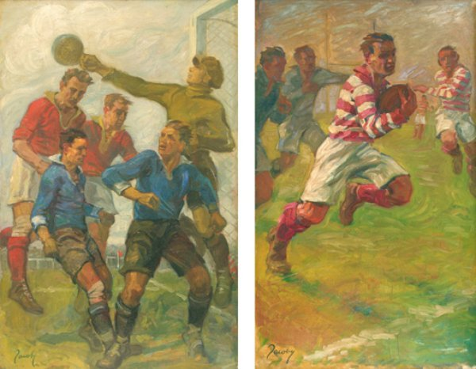
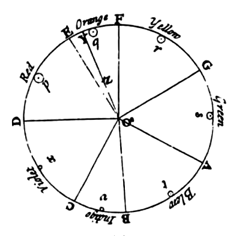

5 FACTS ABOUT ART
1. Art used to be an Olympic event
The Olympics wasn’t always about abs and doping scandals. The founder of the modern Games, the Baron Pierre de Coubertin, was enamoured with the idea of the true Olympian being a talented artist and sportsperson. Thanks to him, between 1912 and 1948 medals were given out for sporting-inspired masterpieces of architecture, music, painting, sculpture and literature.

2. The Mona Lisa has her own mailbox in the Louvre because of all the love letters she receives
Over the years many have fallen prey to the portrait’s ‘limpid and burning eyes’, leaving her offerings of flowers, poems and, yes, love notes. Artist Luc Maspero allegedly took this fervour to a new high – and then low – in 1852, diving off a hotel balcony because “For years I have grappled desperately with her smile. I prefer to die.” Who knew art appreciation could be so dark?

3. The colour wheel predates the United States
Considering the US is one of the oldest modern democracies, this is pretty amazing. Sir Isaac Newton invented the colour wheel in 1706 by refracting white sunlight into its six colours. The realisation that light alone was responsible for colour was radical, and the wheel proved especially useful for artists, who could now easily observe the most effective colour complementation.

4. Artist Willard Wigan once inhaled his own work
What’s that, you say? He inhaled a painting?? The man must be enormous! Not quite. Wigan’s works are ‘micro-sculptures’, so tiny they must be viewed through a microscope. In creating his art, Wigan has to slow his heartbeat and work between pulses. The work he inhaled was Alice, from Alice in Wonderland, but apparently she was even better when remade.
5. In 2003 street artist Banksy stuck his own work to the wall in the Tate Modern Museum.
The prank was soon undone by its inadequate glue, but for a few hours Crimewatch UK Has Ruined the Countryside For All of Us was hung in one of the world’s most famous museums. It also inspired Andrzej Sobiepan, a Polish art student, to a similar feat in 2005, where for three days he successfully passed off his work as part of the National Museum’s collection.